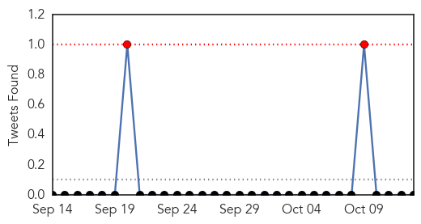
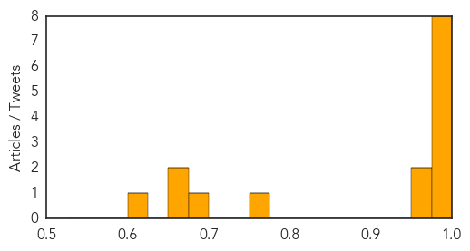

Dengue Fever
30-Day Web Trend
10 alerts, 9 warnings
30-Day Twitter Trend
0 alerts, 0 warnings

Article Locations
Article Confidences
Top Articles:
- 0.996
- Dangers of dengue
- 0.995
- Delhi battles worst dengue outbreak in 20 years, 10,252 cases reported : Mail Today, News
- 0.994
- Dengue fever outbreak enters its most intense phase, claims two lives so far
- 0.994
- 10,000 and counting: Delhi battles its worst dengue outbreak in 20 years
- 0.992
- With 41 deaths, dengue cases cross 10k mark
- 0.992
- Pakistan update: Six dead, thousands test positive for dengue
- 0.991
- Comprehensive genomic study provides evidence that dengue has become endemic and diverse in China
- 0.986
- Comprehensive Genomic Study Provides Evidence that Dengue...
- 0.969
- Chandni Chowk to China: Kejriwal now seeks dragon's help to fight dengue
- 0.952
- Did You Know that Malaria spreads Right from the Backyard of Wenlock HospitalMangalorean.com
- 0.756
- China at severe dengue epidemic risk: Study
- 0.689
- Jamaican ministry urges preventive measures due to mosquito increase
- 0.674
- Delhi govt plan to honeytrap dengue mosquitoes
- 0.657
- China Faces a Greater Risk of Dengue Fever Outbreak in the Future
- 0.603
- NCKU professor presents dengue fever hot spot data with web visualization
Top Tweets:
-
No tweets found for Oct 13, 2015
MERS
30-Day Web Trend
0 alerts, 0 warnings

30-Day Twitter Trend
0 alerts, 0 warnings

Article Locations

Article Confidences

Top Articles:
Top Tweets:
-
No tweets found for Oct 13, 2015